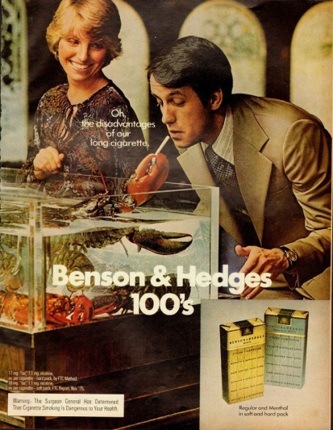

If you’re not satisfied with your life, it’s time to invent a new one.
~ MARY WELLS LAWRENCE ~
MARY WELLS LAWRENCE

An American businesswoman who made a mark in advertising during an age when men dominated the field. Marketing legend and the first female recipient of the Cannes Lions’ Lion of St. Mark award. The prestigious lifetime achievement award celebrates Lawrence’s accomplishments in the field of communications. Mary was the first woman to found and direct a major marketing firm.
Mary born May 25, 1928, Youngstown, Ohio, U.S. At age 18 she attended the Carnegie Institute of Technology in Pittsburgh and later she moved to New York City. In 1964 she became a senior partner at Jack Tinker & Partners, an agency noted for its creativity.
There her imagination and drive flourished. She began working with copywriter Richard Rich and artist Stewart Greene, and the trio developed a number of memorable campaigns, including the “End of the Plain Plane” for Braniff, which revamped the airline company’s image. In 1966, she founded the Wells Rich Greene (WRG) advertising agency as its president with creative partners Richard Rich and Stewart Greene as company treasurer and secretary respectively.
By 1969, Mary Wells was reported to be the highest-paid executive in advertising. Mary Wells stepped down as CEO in 1990 and the agency was sold to Boulet Dru Dupuy Petit (BDDP). After ceasing operations in 1998, Wells Rich Greene BDDP donated its archive of print and television ads to Duke University's John W. Hartman Center for Sales, Advertising and Marketing History.

MAJOR WORKS
Title: "The End of the Plain Plane"
Date: 1965
Mary Wells' profile in the advertising world increased dramatically in the mid-1960s when her advertising campaign "The End of the Plain Plane" for Braniff International Airways. She signed on Alexander Girard as project designer, Alexander Calder for aircraft paint schemes, and Emilio Pucci for uniforms for flight attendants and crew. The campaign was lauded as critical to the airline's revolutionary turnaround.

Title: The “disadvantages” of a longer-than-King-size cigarette
Date: 1966

Benson & Hedges is a British brand of cigarettes owned by American conglomerate Altria. Lawrence was behind the Benson and Hedges marketing campaign in the late 1960s which increased the sales of Benson and Hedges from 1 billion cigarettes in 1966 to 14 billion cigarettes in 1970.
Title: I (LOVE) NEW YORK
Date: 1977
"I Love New York" is the official state slogan of New York.
I Love New York (stylized I ❤ NY) is a slogan, a logo, and a song that are the basis of an advertising campaign developed by the marketing firm of Wells, Rich, Greene under the directorship of Mary Wells Lawrence, used since 1977 to promote tourism in the state of New York, including New York City. The trademark logo, owned by the New York State Department of Economic Development, appears in souvenir shops and brochures throughout the state, some licensed, many not.
The logo was designed by graphic designer Milton Glaser in 1976 in the back of a taxi and was drawn with red crayon on scrap paper. The original drawing is held in the Museum of Modern Art in Manhattan.
Title: Raise your hand if you're Sure
Date: 1985
A popular ad slogan during the 80s: Sure's "Raise Your Hand If You're Sure" had various scenes of people not embarrassed to raise their hands over their head...

You cannot just be you. You must DOUBLE yourself. You must read books on topics you don’t know. You have to travel to place you never think. You have to match every type of people and stress successfully what you know.
~ MARY WELLS LAWRENCE ~